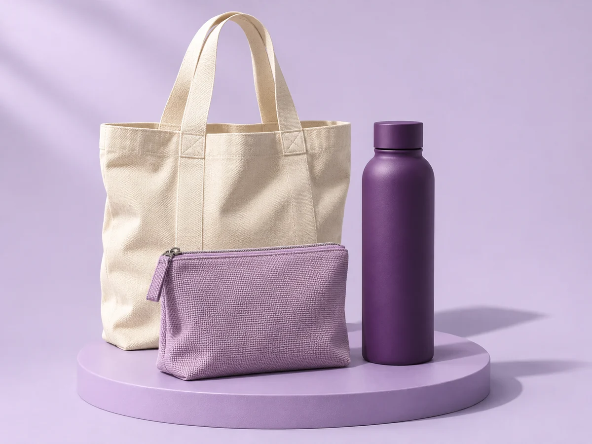

金額與配送
比對折扣與免運門檻，驗證宅配、超商取貨的運費和最終應付金額。
決策表 · 門檻值
TEST STRATEGY
優先檢查金額、可售數量和出單條件，再驗證輸入格式與提示。案例執行結果來自結帳和下單的邏輯層。
比對折扣與免運門檻，驗證宅配、超商取貨的運費和最終應付金額。
決策表 · 門檻值檢查單品庫存、空購物車、優惠碼大小寫和最低消費。
邊界值 · 等價類別驗證付款被拒、重複送單及取消回補，核對訂單狀態與庫存。
負向測試 · 狀態轉移DEFECT REPORTS
展開缺陷查看重現步驟、預期與實際結果，以及連結的回歸案例。
CHECKOUT SANDBOX
增減商品、套用優惠、選擇配送，並模擬付款與訂單操作。同一組輸入與操作會在切換版本時重跑。
TEST EXECUTION
依模組或結果篩選，查看每個案例的測試輸入與逐項比對。可下載所選版本的完整 JSON 報告。
| 案例 | 模組 | 優先級 | 結果 |
|---|